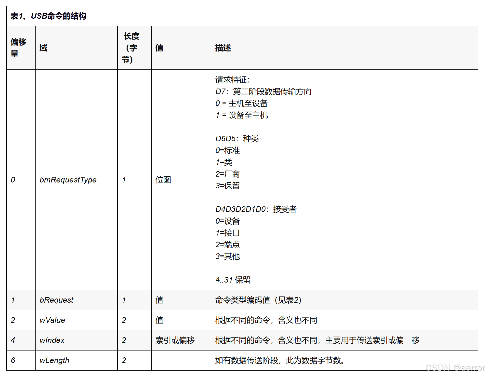
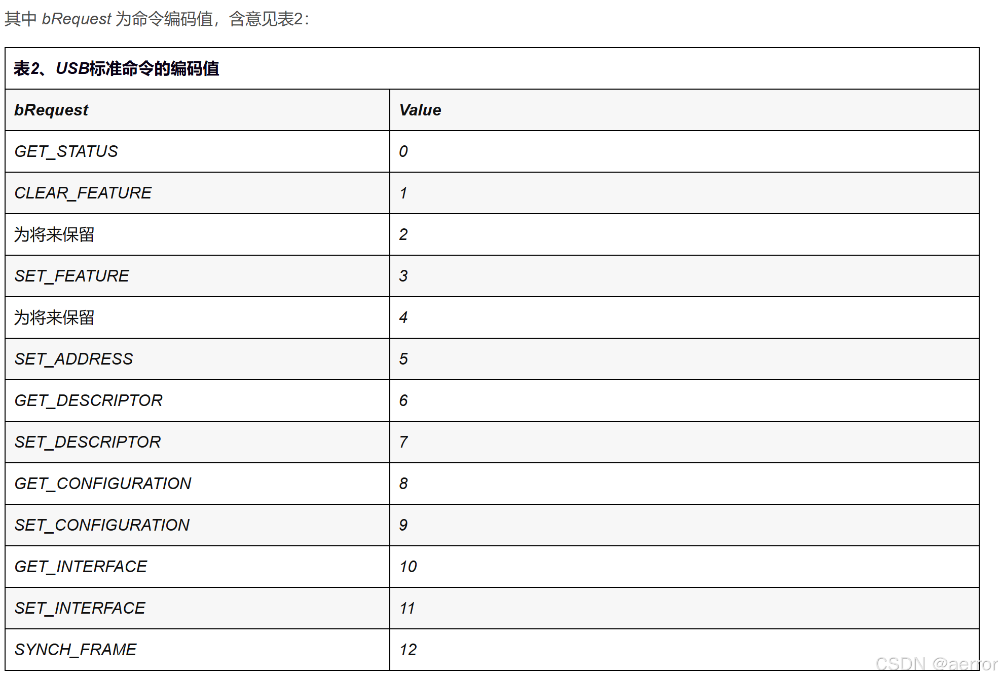
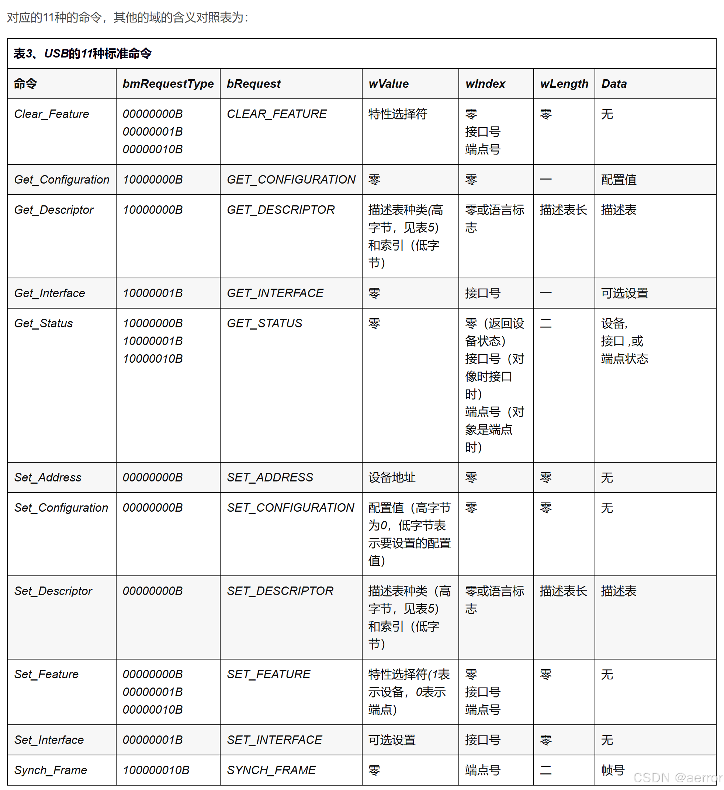
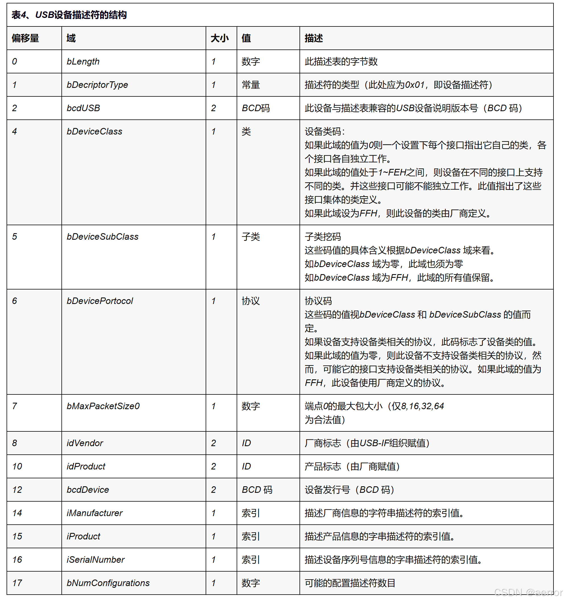
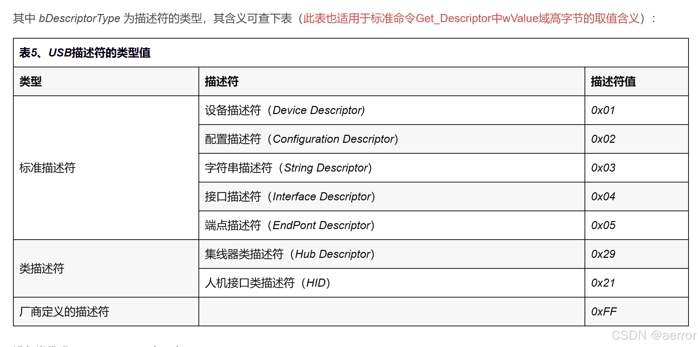
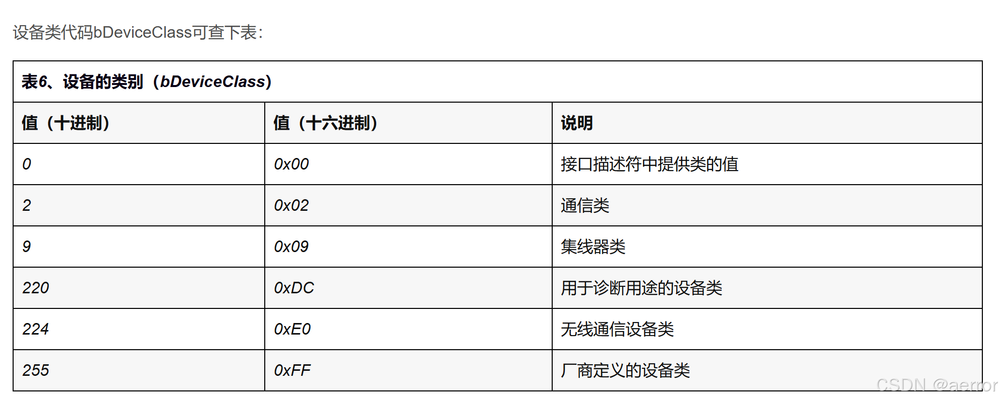
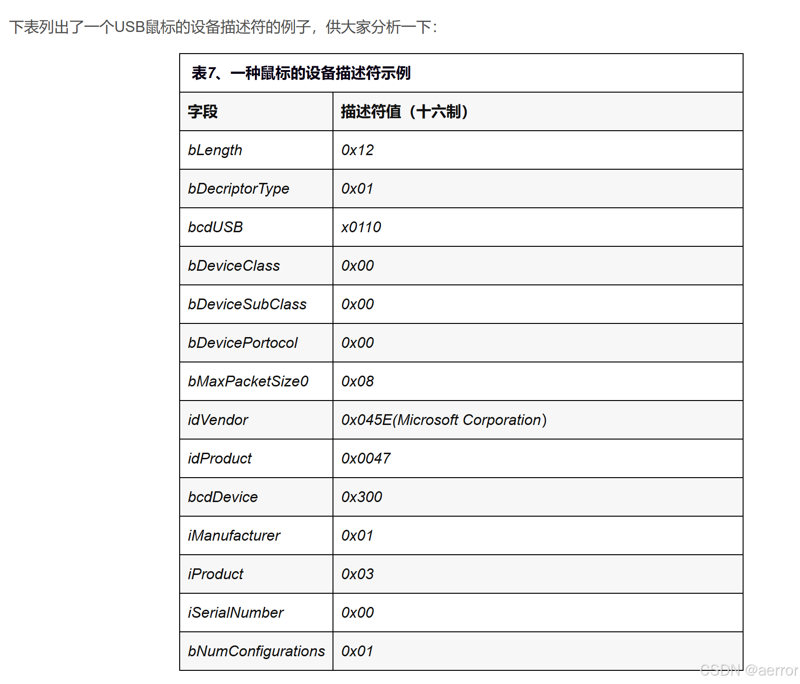
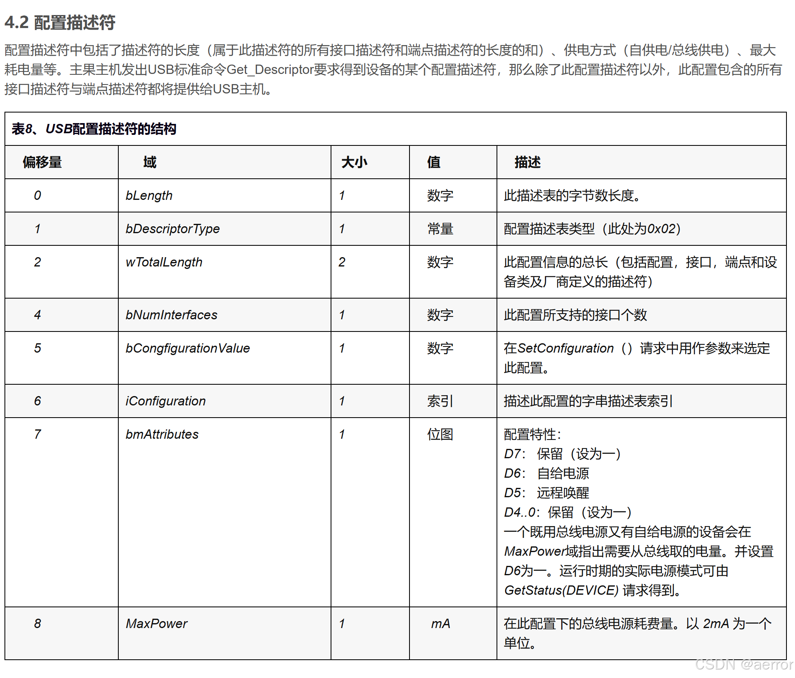

USB请求（用于控制传输)，结构如下：
bmRequestType(1) + bRequest(1) + wvalue(2) + wIndex(2) + wLength(2)
按插入一个HID设备，setup和传输的时线间，只有四步，即可完成设置，举例说明：
1. 请求设备描述符
52.0 CTL 80 06 00 01 00 00 12 00 GET DESCRIPTOR 372.1.0
device
52.0 IN 12 01 10 01 00 00 00 08 9b 0b 12 40 01 00 01 ff ...........@.... 372.2.0
00 01 .. 372.2.16
bmRequest = 80 -D7 == 方向是设备至主机？表1。
bRequest 06 == 为 GET_DESCRIPT
wValue == 00 01 , 根据表5， 1 为设备描述符
wIndex = 00 00 当有多个hid设备，此为下标索引。
wLenght 12 00
2. 请求配置描述
52.0 CTL 80 06 00 02 00 00 09 00 GET DESCRIPTOR 373.1.0
conf
52.0 IN 09 02 22 00 01 01 00 80 32 ..".....2 373.2.0
52.0 CTL 80 06 00 02 00 00 22 00 GET DESCRIPTOR 374.1.0
conf
52.0 IN 09 02 22 00 01 01 00 80 32 09 04 00 00 01 03 00 ..".....2....... 374.2.0
00 ff 09 21 11 01 00 01 22 41 00 07 05 81 03 08 ...!...."A...... 374.2.16
00 0a .. 374.2.32
分了两次请求
wValue 00 02 ,
wLenght 09 00 第一次 请求 09 字节，
收到 9 字节，数据结构如表8，知道长度wTotalLength 为22 ,
第二次请求时
wLenght 为 22 00
根据表8. 解析如下：
bLength 9
bDescriptorType 02
wTotalLength 22
bNumInterfaces 01
bCongfigurationValue 01
iConfiguration 00
bmAttributes 80
MaxPower
3. 设置config和设置IDLE
52.0 CTL 00 09 01 00 00 00 00 00 SET CONFIG 375.1.0
52.0 CTL 21 0a 00 00 00 00 00 00 SET IDLE 376.1.0
4. 取report 描述符
要是有多个接口（复合型的设备），IDX就是多个报告的下标索引。对应 pInformation->USBwIndex(即wIndex).
52.0 CTL 81 06 00 22 00 00 81 00 GET DESCRIPTOR 377.1.0
IDX report IDX
52.0 IN 06 a0 ff 09 01 a1 01 09 02 a1 00 06 a1 ff 09 03 ................ 377.2.0
09 04 15 80 25 7f 35 00 45 ff 75 08 95 08 81 02 ....%.5.E.u..... 377.2.16
09 05 09 06 15 80 25 7f 35 00 45 ff 75 08 95 03 ......%.5.E.u... 377.2.32
91 02 09 00 15 00 26 ff 00 75 08 95 08 b1 02 c0 ......&..u...... 377.2.48
c0
81这个长度前面配置描述符中指明的。但是请求的时候，往往比较当前说明的长，这个没有像之前那先尝试再请求，这里代码直接取两者最小返回即可。
5. 发送Report数据
根据report定义，定时或触发性发送数据。
61.1 22:47:10.332 8 IN 02 71 a4 b9 a8 c4 11 6c .q.....l 1574.1.0(397)
61.1 22:47:10.340 8 IN 02 00 bd fa 47 00 eb 47 ....G..G 1575.1.0(397)
61.1 22:47:10.348 8 IN 02 00 fe ae 50 00 fe 50 ....P..P 1576.1.0(397)
61.1 22:47:10.356 8 IN 01 80 80 80 80 00 80 04 ........ 1577.1.0(397)
6. 相关的查询表格








请求接口配置
请求Report设置